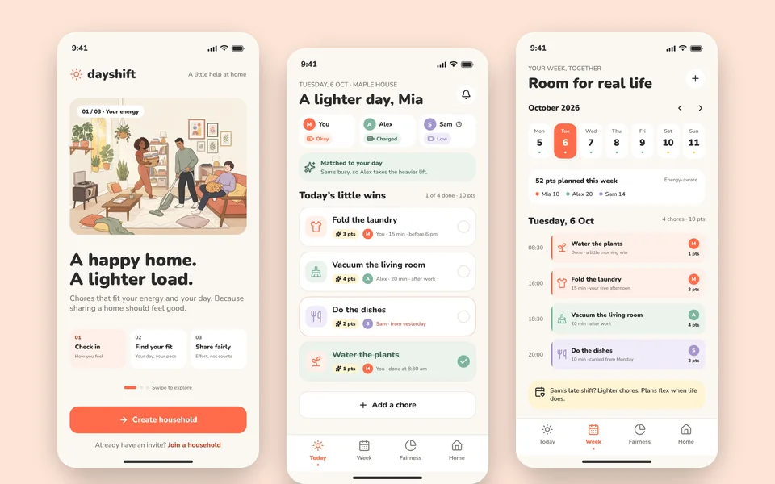
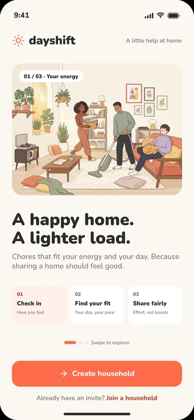
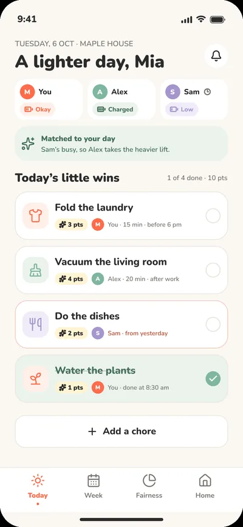
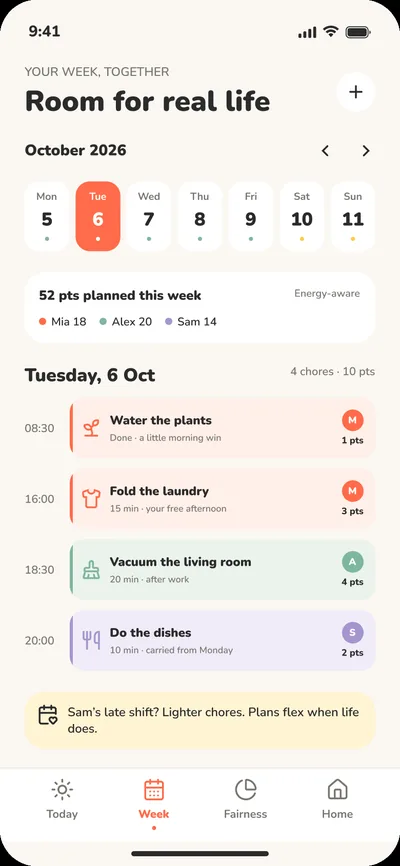
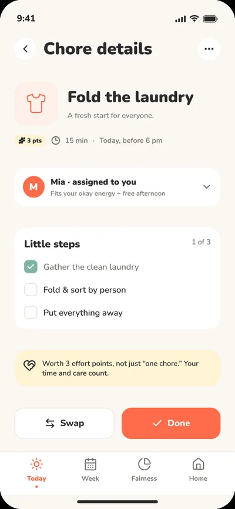
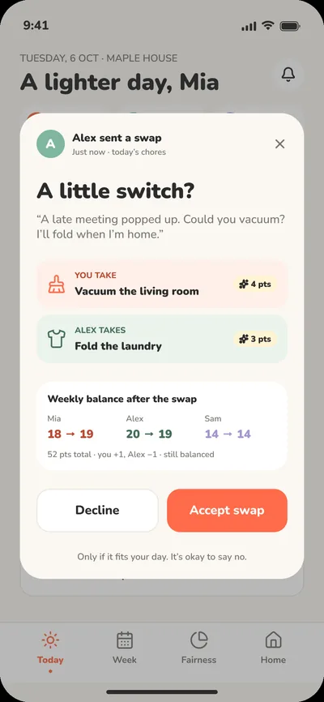
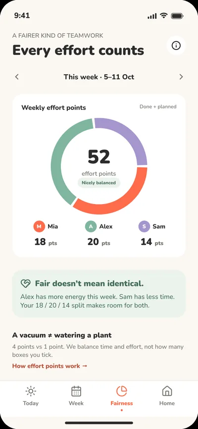
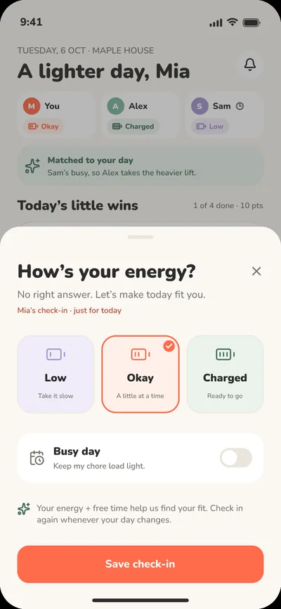
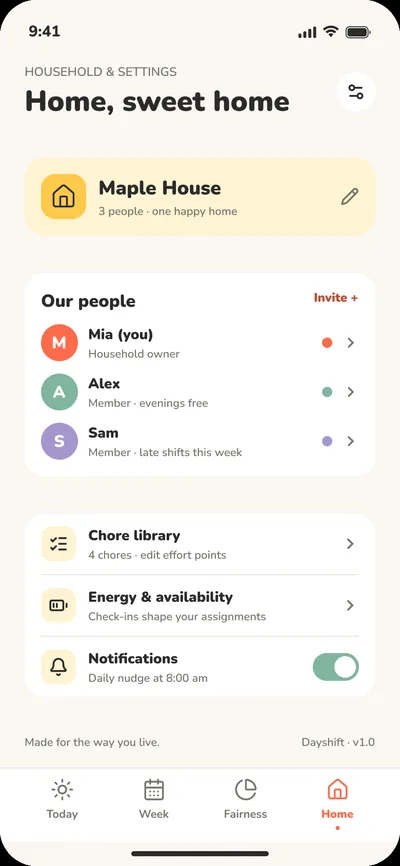

UI/UX design · Chore-sharing app design
Dayshift
A chore-sharing app design for shared households, built around fairness and how much energy each person has on the day.
- Role
- UI/UX design
- Type
- UI/UX design
- Status
- Figma design

The screens








The idea
Chore apps tend to nag or keep score. Dayshift balances effort instead: every chore carries effort points, and each housemate checks in with their energy so the load adapts.
A warm coral and cream palette, soft cards and kind, plain copy keep it friendly for people who live together.
What stands out
- An energy check-in (low, okay or charged) that shapes which chores land on you that day.
- A Today view with each housemate’s energy and a checklist of little wins, plus a weekly planner showing chores and effort points per day.
- A chore detail screen with small steps, and a swap-request flow that shows the weekly balance before a housemate accepts.
- A fairness screen that splits effort points across the household, and settings for members, the chore library and availability.